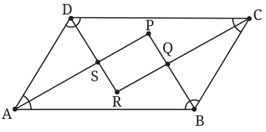

- 1.True or false?
- (i)A parallelogram with a right angle is a rectangle.
- (ii)A rhombus with perpendicular diagonals is a square.
- (iii)If the diagonals of a parallelogram are equal, then it is a rectangle.
- 2.The diagonal AC of a parallelogram ABCD bisects \(\angle A\). Show that it also bisects \(\angle C\) and that ABCD is a rhombus.
- 3.The following questions examine converses of true properties. Answer them with Yes or No. If your answer is No, what extra condition can you add so that the answer becomes Yes?
- (i)If the diagonals of a quadrilateral ABCD bisect its angles, must ABCD be a rhombus?
- (ii)If the diagonals of a quadrilateral ABCD bisect each other at right angles, must ABCD be a rhombus?
- (iii)If the diagonals of a quadrilateral ABCD are of equal length, must ABCD be a rectangle? (In the ancient Indian study of quadrilaterals, equality of diagonals was considered significant. Quadrilaterals were first classified according to whether their diagonals were equal or not, before considering equality of sides.)
- 4.Let ABCD be a parallelogram with \(AB \ne BC\). Show that the pairwise intersection points of the four angle bisectors form the vertices of a rectangle (see Fig. 12.11). Why did we assume \(AB \ne BC\)?

Fig. 12.11